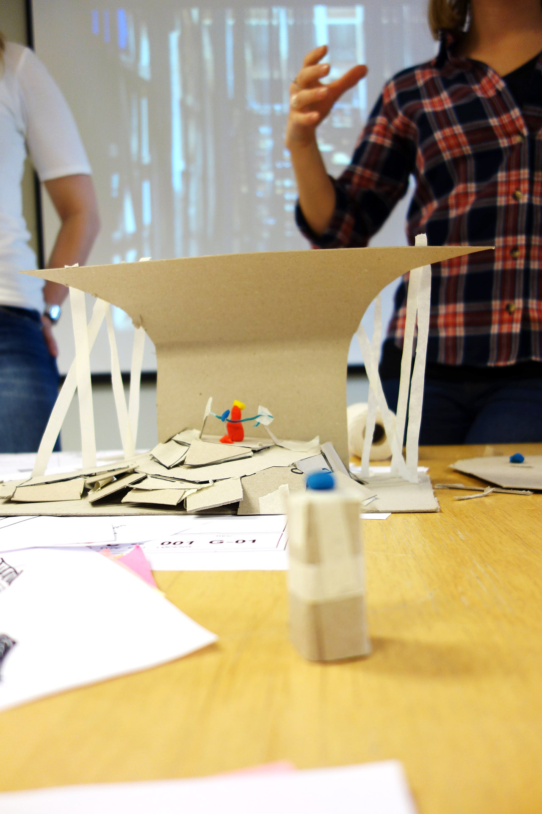
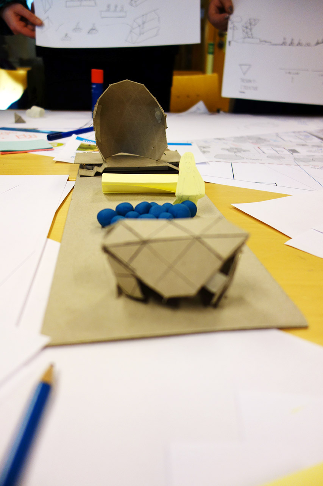

Meieriparken er en park i Ørlandet kommune. Denne skal ved hjelp av en sceneinstallasjon bli en naturlig møteplass for kommunens innbyggere. Ung og gammel skal kunne samles her til forskjellige anledninger. Både scenen og området rundt trenger en funksjonabel og tiltrekkende løsning.

Workshopen ble delt i 4 deler. Den første delen handlet om bruken av parken. Vi tok i bruk personas for å kartlegge ulike målgrupper som bruker parken på forskjellige måter. Vi avsluttet denne delen med en brainstorming øvelse for å finne en felles løsning for målgruppene. Del 2 handler om innghold og utseende, og fokuserte på skissing og konspeptutvikling. I del 3 og 4 skulle man lage plansjer og modeller for deretter presentere konseptet gruppen kom fram til.
Tilbakemeldinger fra Ørland kommune var veldig gode. De fikk håndfaste konsepter illustrert med skisser og modeller som de kunne jobbe videre på. De fikk også gode innspill på kartlegging av brukergrupper og ulike behov.
